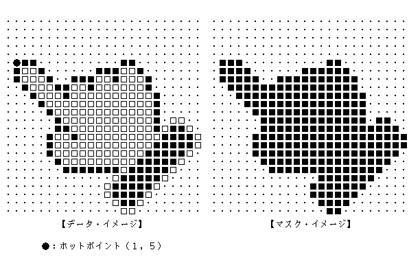
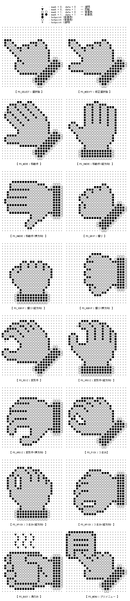

/* вказівник (Pointer)形状 */ typedef W PTRSTL; /* вказівник (Pointer)の形状 */
/* вказівник (Pointer)状態 */
struct PointerStatus {
PNT pos; /* 現在のвказівник (Pointer)の座標位置 */
PTRSTL style; /* вказівник (Pointer)の形状 */
COLOR fgcol; /* 前景色 */
COLOR bgcol; /* 背景色 */
W motion; /* 追従状態(0:非追従, 1:追従) */
W hidden; /* 表示状態(0:表示状態, 正：消去状態) */
W size; /* вказівник (Pointer)розмір у байтах(16,24,32,etc) */
};
typedef PointerStatus PTRSTS; /* вказівник (Pointer)の状態 */
pos は, 現在のвказівник (Pointer)の座標位置であり, スクリーンの左上を(0,0) とした 絶対座標で示される.
style は, вказівник (Pointer)の形状を示し, ≧0 の場合は, システムで定義されている 標準形状を示し, <0 の場合は, прикладний додаток / програмаが独自に定義した形状を示 す. 標準形状としては, 以下のものが定義されている.
/* 標準вказівник (Pointer)形状 */
enum StdPointerShape {
/* (意味) */
PS_SELECT = 0, /* 選択指 : 選択操作 */
PS_MODIFY = 1, /* 修正選択指 : 修正選択操作 */
PS_MOVE = 2, /* 移動手 : 移動可能 */
PS_VMOVE = 3, /* 移動手(縦方向) : 移動可能(縦方向のみ) */
PS_HMOVE = 4, /* 移動手(横方向) : 移動可能(横方向のみ) */
PS_GRIP = 5, /* 握り : 移動ドラッグ中 */
PS_VGRIP = 6, /* 握り(縦方向) : 移動ドラッグ中(縦方向のみ) */
PS_HGRIP = 7, /* 握り(横方向) : 移動ドラッグ中(横方向のみ) */
PS_RSIZ = 8, /* 変形手 : 変形可能 */
PS_VRSIZ = 9, /* 変形手(縦方向) : 変形可能(縦方向のみ) */
PS_HRSIZ = 10, /* 変形手(横方向) : 変形可能(横方向のみ) */
PS_PICK = 11, /* つまみ : 変形ドラッグ中 */
PS_VPICK = 12, /* つまみ(縦方向) : 変形ドラッグ中(縦方向のみ) */
PS_HPICK = 13, /* つまみ(横方向) : 変形ドラッグ中(横方向のみ) */
PS_BUSY = 14, /* 湯のみ(待ち状態) : 待ち状態 */
PS_MENU = 15 /* プリメニュー : メニュー表示 */
/* = 16 〜 : 予約 */
};
fgcol と bgcol はそれぞれвказівник (Pointer)の前景色, 背景色を示すピクセル値である.
motion は, вказівник (Pointer)の位置がВказівний пристрій (Pointing Device)に追従しているか否か の状態を示す.
hidden は, вказівник (Pointer)の消去要求数を示し, この値が0の時, вказівник (Pointer)が実際に 表示されていることになる.
size は, вказівник (Pointer)розмір у байтахを示し, вказівник (Pointer)形状を定義する正方形の大きさ(高 さ) をピクセル数で示したもので, 標準的には24であるが, インプリメントに よっては, 16, 32等の場合もある.
вказівник (Pointer)の形状を示すイメージデータは, 以下のструктура даних Cで表わされる.
/* вказівник (Pointer)イメージデータ */ #define MAX_PTR_SIZE 64 /* вказівник (Pointer)イメージデータрозмір у байтах */ #define P_SIZE (MAX_PTR_SIZE * MAX_PTR_SIZE) / 8
struct PointerImage {
PNT hotpt; /* ホットポイントの座標値 */
SIZE size; /* вказівник (Pointer)розмір у байтах */
UB data[P_SIZE]; /* データイメージ */
UB mask[P_SIZE]; /* マスクイメージ */
};
typedef PointerImage PTRIMG; /* вказівник (Pointer)イメージ */
hotpt は, イメージデータ中のどの点をвказівник (Pointer)位置とするかを示すもので, イ メージ長方形の左上を(0,0)とした座標値で表わされる. 即ち, hotpt がポイ ンタ位置となるようにвказівник (Pointer)イメージが表示される.
data と mask はそれぞれвказівник (Pointer)のデータイメージとマスクイメージを表現す る以下のビットマップである. n はвказівник (Pointer)のрозмір у байтахであり, 標準では24で あるが, インプリメントによっては, 16, 32 などとなる.
planes : 1 rowbytes : ((n + 15)÷16)×2 (偶数) bounds : (0,0,n,n) baseaddr : data / mask
P_SIZE は, вказівник (Pointer)розмір у байтахに依存した値であり, n × rowbytes である. (n = 16 の時は P_SIZE = 32, n = 24 の時は P_SIZE = 96 , n = 32 の時は P_SIZE = 128)
вказівник (Pointer)イメージの表示は, データイメージと, マスクイメージに従って, 以 下のように描画環境上に行なわれる.
データ マスク 表示 0 1 → 背景色 1 1 → 前景色 0 0 → 元のイメージのまま (透明) 1 0 → 元のイメージの反転 (XOR)
前景色と背景色は, вказівник (Pointer)の色を指定したピクセル値である. この値は基本的 には, スクリーンへの描画で使用されるピクセル値と同一であるが, インプリメ ントによっては, 異なっている場合もある.

|
|
消去要求では, вказівник (Pointer)の消去要求数を＋１してвказівник (Pointer)の表示を消去する. 表示要求では, вказівник (Pointer)の表示要求数が0でない場合, −１して0になった場 合にвказівник (Pointer)の表示を行なう. 強制表示要求では, вказівник (Pointer)の表示要求数を0 としてвказівник (Pointer)の表示を行なう.
結果としての消去要求数を関数値として戻す. 即ち, 関数値が0の場合は, ポ インタは表示されており, ＞0の場合はвказівник (Pointer)は表示されていないことにな る.
|
|
|
非追従指定を行なった場合はその時点でポ インタの位置は固定され, gmov_ptr() 関数によってのみвказівник (Pointer)表示を移動 することができる. 追従指定を行なった場合は, その時点からвказівник (Pointer)の表示 はВказівний пристрій (Pointing Device)に追従を始める. 従って, вказівник (Pointer)の表示位置が, Вказівний пристрій (Pointing Device)の位置と異なっていた場合は, 追従指定によりポイ ンタ表示が移動することになる.
既に追従している時に追従指定を行なった場合や, 非追従の時に非追従指定を 行なった場合は何もしない.
|
sts は PTRSTS структура даних Cデータへのвказівник (Pointer)であり, img は PTRIMG структура даних Cデー タへのвказівник (Pointer)であり, ともに予めその領域は確保されている必要がある. sts または img が NULL の場合は, それぞれ対応するデータは格納されない.
関数値としてвказівник (Pointer)のрозмір у байтахが戻る.